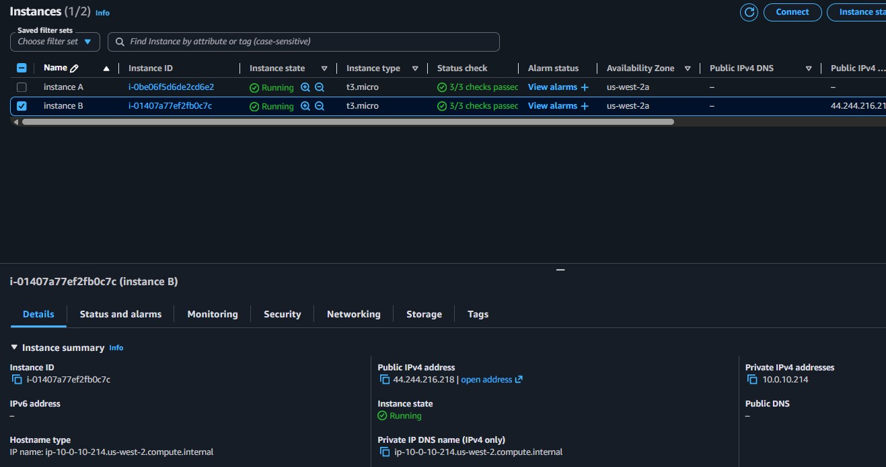

Environment Investigation
Examined both EC2 instances to compare their networking configurations. Instance A had only private IP 10.0.10.72, while Instance B had public IP 44.244.216.218 and private IP 10.0.10.214.
This lab presents a customer support scenario where an EC2 instance cannot reach the internet. The investigation focuses on the difference between public and private IPv4 addresses and how that distinction affects connectivity outside a VPC.
Investigated a customer scenario with two EC2 instances in the same VPC. Instance A had only a private IP (no public IP assigned), while Instance B had both a public and private IP. The lack of a public IP on Instance A was the reason it could not reach the internet.
Examined both EC2 instances to compare their networking configurations. Instance A had only private IP 10.0.10.72, while Instance B had public IP 44.244.216.218 and private IP 10.0.10.214.
Attempted SSH connections to both instances via PuTTY. Only Instance B was reachable because it had a public IP address assigned, confirming the root cause of the issue.
Two t3.micro instances (Instance A and Instance B) were pre-configured in the lab environment to replicate the customer's scenario. Their networking tabs were inspected to compare IP assignments.
A single VPC with CIDR range 10.0.0.0/16 hosted both instances in a public subnet. The VPC architecture included an Internet Gateway and proper route tables.
Detailed documentation of the troubleshooting process following the customer scenario.
10.0.10.72 but no public IPv4 address assigned.44.244.216.218 and a private IPv4 address of 10.0.10.214.
The lab introduced a troubleshooting approach based on the OSI model, mapping each layer to its equivalent AWS resource. Starting from the bottom (EC2 instance) and working up helps isolate the problem layer.
| Layer | OSI Function | AWS Equivalent |
|---|---|---|
| 7 | Application | Application |
| 6 | Presentation | Web/Application Servers |
| 5 | Session | EC2 Instances |
| 4 | Transport (TCP) | Security Groups, NACLs |
| 3 | Network (IP) | Route Tables, IGW, Subnets |
| 2 | Data Link (MAC) | Route Tables, IGW, Subnets |
| 1 | Physical | Regions, Availability Zones |
44.244.216.218, confirming that the public IP enables external access.This lab demonstrated a common networking misconfiguration: an EC2 instance that lacks a public IP address cannot be accessed from the internet, even if the VPC architecture (Internet Gateway, route tables, subnets) is correctly set up.
The customer's Instance A only had a private IP, making it invisible from outside the VPC. The fix is to assign a public IP (either auto-assigned or via an Elastic IP). Additionally, the lab reinforced that VPCs should always use RFC 1918 private IP ranges to avoid routing conflicts with public internet addresses.